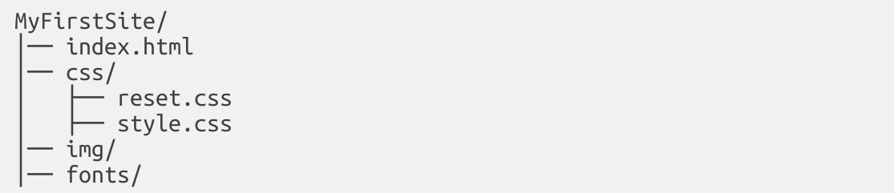
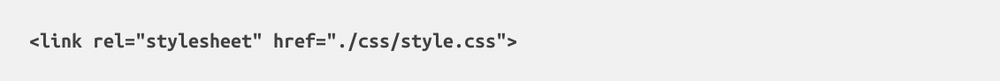
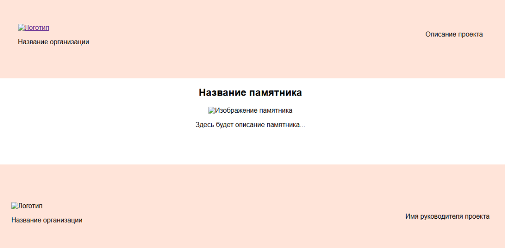

Введение в VS Code
Что такое Visual Studio Code?
Visual Studio Code (VS Code) – это бесплатный редактор кода с поддержкой множества языков программирования, включая HTML и CSS. Он удобен для верстки сайтов благодаря встроенным инструментам и плагинам.
Установка и настройка
Скачайте и установите VS Code.
Запустите редактор и установите плагин Live Server:
Перейдите во вкладку "Extensions" (Ctrl + Shift + X).
Введите "Live Server" в поиск. Установите расширение на кнопку "Install".
Основы HTML и CSS
Что такое HTML?
HTML (HyperText Markup Language) – это язык разметки, определяющий структуру веб-страницы. Подходит для:
Лендингов,
Блогов,
Интернет-магазинов,
Корпоративных сайтов.
HTML использует теги, которые обозначают различные элементы страницы: заголовки, абзацы, изображения и т.д.
Что такое CSS?
CSS (Cascading Style Sheets) – отвечает за оформление HTML-страницы: цвета, шрифты, отступы, расположение элементов. Позволяет адаптировать сайт под разные устройства. Стили можно задавать тремя способами:
Внешний файл (style.css),
Встроенные стили (<style> в <head>),
Прямо в атрибутах (style="color: red;").
Создание проекта
Создайте папку MyFirstSite.
Откройте её в VS Code (File → Open Folder).
Создайте структуру файлов:

Основная структура HTML-документа
1. Создание HTML-файла
Откройте index.html и добавьте базовую структуру:
html
<!DOCTYPE html>
<html lang="ru">
<head>
<meta charset="UTF-8">
<meta name="viewport" content="width=device-width, initial-scale=1.0">
<link rel="stylesheet" href="./css/style.css">
<title>Название страницы</title>
</head>
<body>
</body>
</html>
Разметка страницы
Добавьте в index.html следующий код:
html
<body>
<header class="header">
<div class="left">
<a href="/index.html"><img class="logo" src="./img/logo.svg" alt="Логотип"></a>
<p class="name-colog">Название организации</p>
</div>
<p>Описание проекта</p>
</header>
<main class="main">
<h2 class="name-monument">Название памятника</h2>
<img class="img-monument" src="./img/monument.jpg" alt="Изображение памятника">
<p class="text-monument">Здесь будет описание памятника...</p>
</main>
<footer class="footer">
<div class="footer-info">
<div class="logo-footer">
<img src="./img/footer-logo.svg" alt="Логотип">
<p class="name-footer">Название организации</p>
</div>
<p class="name-teacher">Имя руководителя проекта</p>
</div>
</footer>
</body>
Разбор структуры
Основы CSS: работа со стилями
Подключение CSS
В файле index.html стили уже подключены через:

Базовые стили
Создайте css/style.css и добавьте:
css
body {
font-family: Arial, sans-serif;
display: flex;
flex-direction: column;
}
.header {
background-color: #FFE4D9;
padding: 58px 0 61px;
display: flex;
justify-content: space-around;
}
.main {
display: flex;
flex-direction: column;
align-items: center;
}
.footer-info {
background-color: #FFE4D9;
display: flex;
justify-content: space-around;
align-items: center;
height: 248px;
margin-top: 69px;
}
Медиа-запросы (адаптивность)
Медиа-запросы позволяют изменять стили в зависимости от ширины экрана.
css
@media (max-width: 768px) {
.header {
flex-direction: column;
text-align: center;
}
.text-monument {
width: 90%;
}
.img-monument {
width: 80%;
}
}
Как это работает?
Запуск проекта
Теперь у вас есть базовый одностраничный сайт, созданный пошагово! 🚀

Заполнение нужными элементами